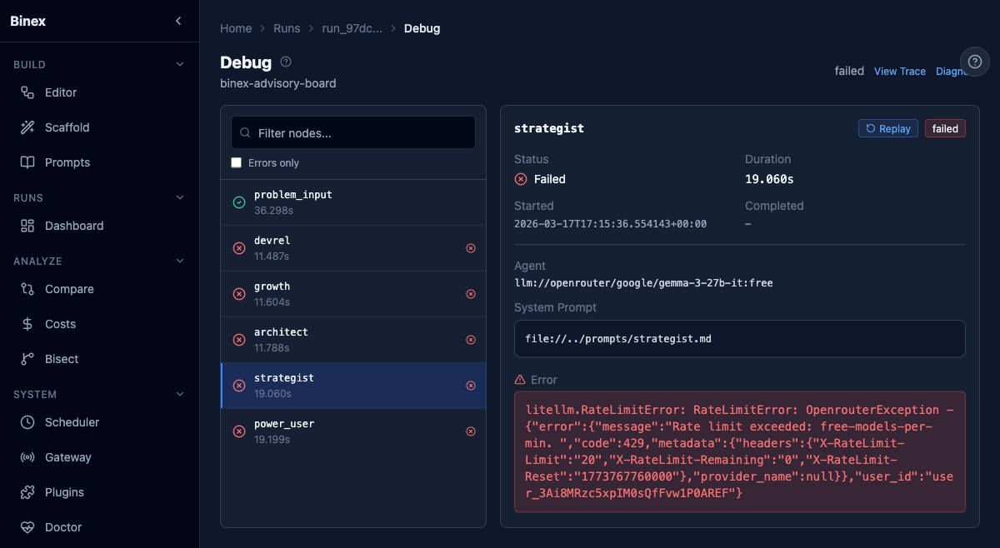
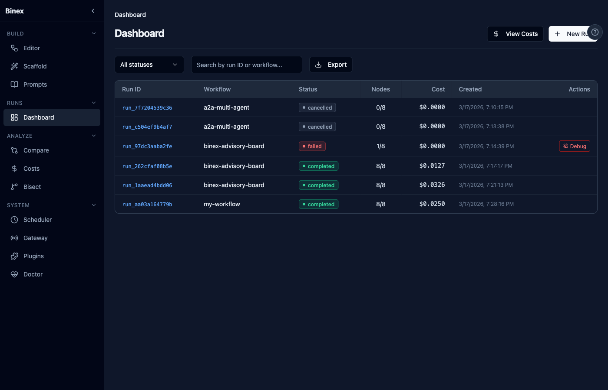
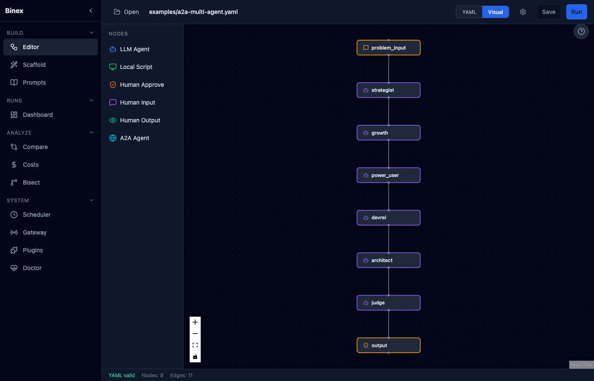
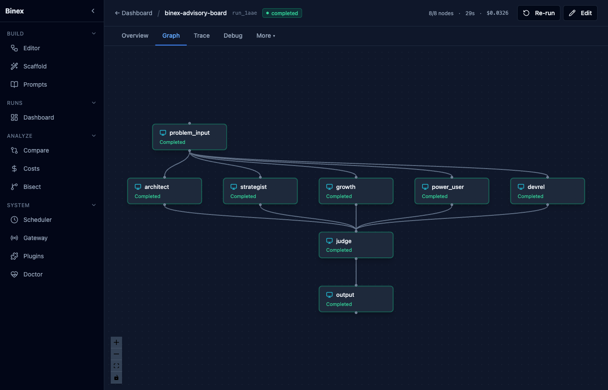
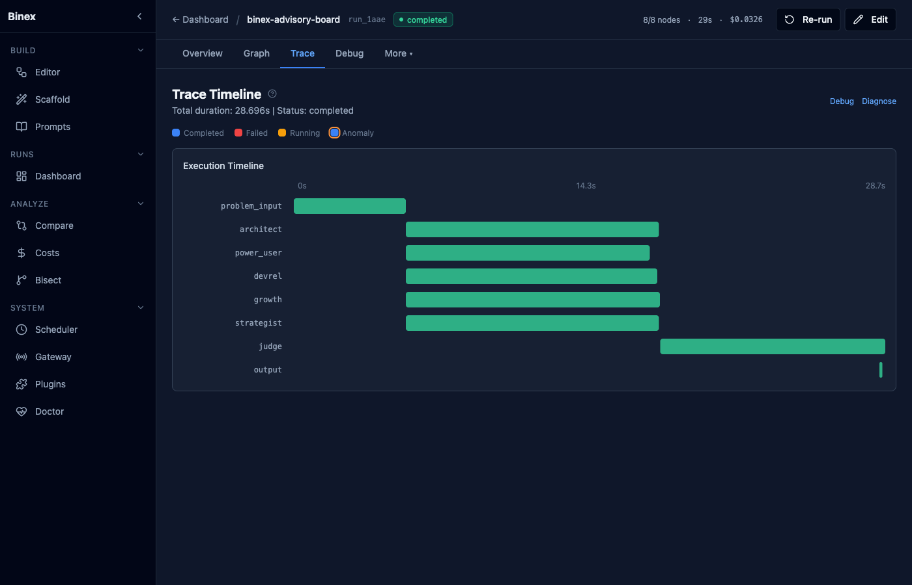
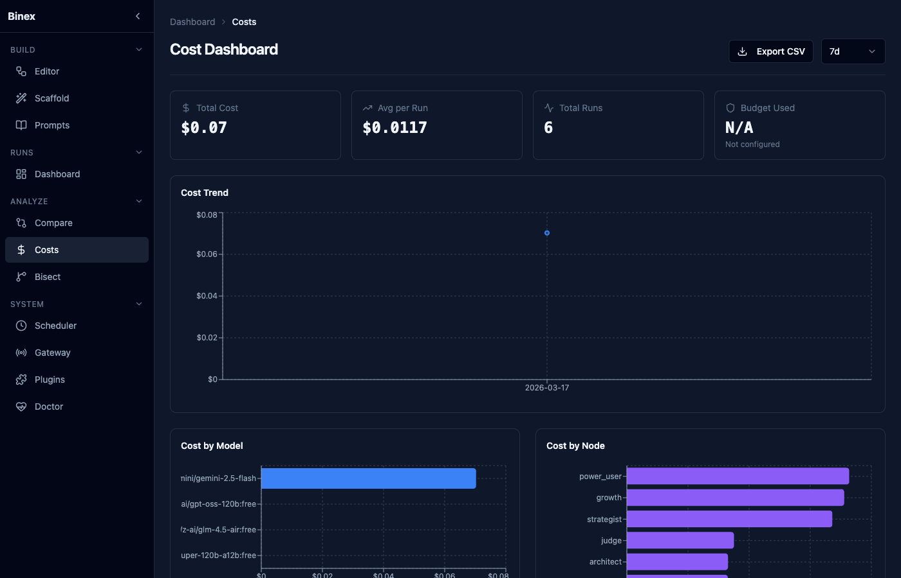

Spec-Driven Development with LLMs: What Actually Worked Building Binex
I watched $40 disappear in one evening.
Not on hosting. Not on a SaaS tool. On a single LLM chain that got stuck in a loop, calling itself over and over while I stared at a terminal that told me nothing. No trace. No cost breakdown. No way to see which step failed or why. Just a growing bill and a black box.
I closed the terminal. Not in frustration — in decision. I'm going to build the thing that would have saved me tonight.
That thing became Binex — an open-source runtime for AI agent pipelines. You define your workflow as a DAG in YAML, and Binex runs it with full visibility: per-node cost tracking, artifact lineage, trace replay, conditional branching, and a web UI that shows you exactly what each agent did, what it cost, and where it broke. The "debugger for LLM workflows" I wished I had that evening.

Ten days later (~6-8 hours/day), that thing had a name — Binex — 2,393 passing tests, 96% coverage, and a 19-page Web UI. Built with the same technology that burned me: LLMs.
Someone on Reddit asked me HOW I steered the LLMs to produce something functional. Fair question. Here's the actual process — the parts that worked, the parts that didn't, and the specific tools I used.
TL;DR: Spec-driven development + living context file + architecture debates + structured QA + domain-specific skills + parallel agents. 60 design docs and 200+ spec files written before code. 16 features in 10 days. Total LLM cost: ~$30-40.
About me: Senior engineer, 8+ years. Automation infrastructure, internal dev tools, CI/CD pipelines, QA automation team lead. I know what production-grade tooling looks like — that matters, because the LLM doesn't always.
1. Spec-Driven Development (the non-negotiable)
From day one, every feature started with specs, not code. I'd seen enough chaotic LLM output to know that "build me X" produces confident garbage.
The pipeline: 1. Brainstorm — explore the idea, clarify requirements, propose 2-3 approaches with trade-offs 2. Design doc — what we're building, why, architecture decisions with rationale 3. Implementation plan — exact file list, interfaces, data flow, phased tasks 4. Task breakdown — scoped units with inputs, outputs, boundaries, parallelization markers
I use speckit to generate these. Each feature gets a full package: spec.md (user stories + acceptance criteria), plan.md, data-model.md, contracts/ (API/CLI schemas), tasks.md. Over 10 days this produced 60 design documents and 200+ spec files across 16 features.
A real task looks like:
Task 1.1: Backend API GET /api/v1/tools/builtins
New: src/binex/ui/api/tools.py
Modify: src/binex/ui/server.py (register router)
Pattern: follow providers.py router pattern
Returns: 10 built-in tools with name, description, category
vs "add a tools API endpoint" which gave me hardcoded mock data that didn't touch the actual tool registry.
Tasks marked [P] run in parallel (no file deps). Peak day: 73 commits.
2. Architecture by Argument
The planning phase is where the real work happens.
I spend 1-2 hours debating architecture with the LLM before any code is written. Not describing — arguing. "What happens if this fails?" "How does this interact with the existing store layer?" "Why not X instead?"
Real example: for the scheduler, I wanted a simple in-memory cron loop. The LLM pushed back — "What happens when the process restarts? You lose all state." I argued: "It's a dev tool, restarts are fine." The LLM countered: "Then at least persist which runs completed, so you don't re-trigger them." That 10-minute debate saved me from shipping duplicate workflow executions.
It works both directions. Sometimes the LLM suggests over-engineering — distributed locks, message queues — and I push back with "we're a solo-dev CLI tool, not Netflix."
Diminishing returns after ~2 hours though. If you're still arguing, prototype.
3. Context Management
LLMs forget everything between sessions. This kills productivity on anything non-trivial.
My solution: a living CLAUDE.md that accumulates architecture decisions, conventions, and gotchas. Every session starts with the LLM reading it.
- Layered deps: models → stores → adapters → runtime → cli
- Always call await store.close() or aiosqlite hangs
- Use _get_stores() helper, patch it in tests
- Tool URI schemes: python://, builtin://, mcp://
- Frontend: always use (value ?? 0).toFixed(N) — API fields can be null
This file grew from 80 to 183 lines across 16 features (~15-25 lines added per feature). Never deleted old patterns — only added.
On top of that, I keep a memory system — separate files for: - Feedback corrections: things the LLM got wrong, so the same mistake never happens twice - Project state: what's in progress, what decisions were made, dates - User preferences: how I like to work (parallel agents, verify before claiming done)
The CLAUDE.md + memory is basically institutional knowledge that makes the LLM effective across dozens of sessions.

4. The Tooling Stack (this is the multiplier)
It's not just "use good prompts." It's a full stack of domain-specific tools.

Skills (specialized prompt templates)
Skills are pre-packaged context + instructions for recurring task types. I used:
- brainstorming — runs before every feature. Explores intent, proposes approaches, gets approval before any code
- writing-plans — generates implementation plans from specs
- qa-expert + qa-testing-methodology — structures QA rounds with test case design (equivalence partitioning, boundary analysis)
- test-driven-development — enforces test-first workflow
- code-reviewer — runs after each major phase, catches architectural issues
- binex-a2a-development — domain-specific knowledge about the Binex codebase (adapters, stores, models, CLI patterns)
- react-flow-implementation — knows @xyflow/react patterns, nodes, edges, handles
- fastapi-expert — FastAPI + Pydantic v2 patterns
- python-testing-patterns — pytest fixtures, mocking, async test patterns
Each skill eliminates the "let me re-explain how we write tests in this project" overhead. Nine skills × ~50 uses each adds up.
MCP Servers (external tool integration)
- context7 — pulls up-to-date documentation for any library in real time. When I'm working with React Flow or shadcn/ui, the LLM gets current API docs instead of hallucinating outdated patterns
- playwright — browser automation for taking UI screenshots, verifying frontend behavior, running E2E visual checks
The Full Team
I run a full agent team with specialized roles. The /start_day command can spawn up to 9 agents:
| Role | What they do |
|---|---|
| Architect | Reviews API contracts, module boundaries, backward compat |
| Product Manager | Defines priorities, writes feature specs, reviews from user perspective |
| Designer | UI/UX brainstorming, component plans, interaction flows |
| Frontend Dev | React 18 + Tailwind + shadcn/ui implementation |
| Backend Dev | FastAPI + CLI + data models in Python |
| QA Tester | Runs tests, finds regressions, reports bugs with severity |
| Docs Maintainer | Keeps README, CLAUDE.md, docs consistent with code |
| DevOps | CI/CD, GitHub Actions, releases, branch hygiene |
| Meta Agent | Reactive advisor — pings team-lead with recommendations on memory, context, and lifecycle |
You don't run all 9 simultaneously. I manage the roster as team-lead; the Meta Agent advises me when pinged:
- Lifecycle advisor: when a teammate finishes and goes idle, they ping Meta Agent. It checks the task list and recommends: "Agent X idle → available tasks Y,Z" or "Agent X idle → no tasks, recommend shutdown?" — I make the final call
- Memory manager: updates CLAUDE.md and memory files as features complete, so future sessions start with full knowledge
- Strictly reactive: Meta Agent does nothing until pinged. No autonomous monitoring, no spawning or shutting down agents on its own
A typical session might have 3-4 agents running, not 9. Backend feature? Architect + backend-dev + qa-tester. UI feature? Add designer + frontend-dev. Everything else is off. This keeps costs comparable to single-agent usage — you're just distributing the same work across focused contexts instead of one bloated one.
Real example: Feature 017 (tools integration) — backend-dev built the API endpoint + tests while frontend-dev built 6 React components in parallel. One feature, two agents, roughly half the wall-clock time compared to doing both sequentially. Meanwhile qa-tester runs structured test plans on the previous feature.
This blog post itself was reviewed by a different team configuration — 5 content agents (tech-writer, storyteller, skeptic, SEO specialist, LLM workflow expert) reviewing the draft simultaneously, each from their own angle. Yes, it's turtles all the way down.
The key: agents only work in parallel when tasks have zero file dependencies. Shared state = sequential. Independent files = parallel.

Above: run graph showing completed DAG nodes with status indicators.
The trace timeline shows the same run from a different angle — parallel execution visualized as overlapping time bars:

5. Structured QA (not optional)
I ran 6 formal QA rounds with tracking:
| Round | Test Cases | Tests Before → After | Bugs Found |
|---|---|---|---|
| QA v1 | 65 | 486 → 664 | 2 (path traversal, infinite recursion) |
| QA v2 | 125 | 756 → 870 | 0 |
| QA v3 | 46 | 1,158 → 1,204 | 0 |
| E2E | 31 | 1,204 → 1,235 | 0 |
| QA v4-v6 | 200+ | 1,235 → 2,393 | 0 |
Each round has a test plan (.md), execution tracking (.csv), and bug tracking with severity levels. The E2E tests use real subprocess.run("binex ...") — no mocks, real SQLite, real filesystem.
The two bugs from QA v1 were real security issues: BUG-001 was a path traversal in the artifact store (../../etc/passwd as artifact ID), BUG-002 was infinite recursion in lineage tracking with circular derived_from references. The QA skill generates test cases specifically targeting these patterns (boundary analysis, security edge cases). Without structured QA, these ship.
Three more critical bugs were caught by a separate architect review pass — an LLM-assisted code review after implementation, specifically looking for concurrency issues and data integrity problems. The specs didn't predict them. Defense in depth.
6. What Doesn't Work
The LLM will confidently write broken code. The worst: an async handler that looked correct but silently swallowed a database connection error under specific timing. Tests passed because mocks didn't reproduce the timing. Took three hours to find.
Context windows are real. Even with CLAUDE.md, you lose nuance as the codebase grows. I had to re-explain architectural decisions that were "obvious" to me. Aggressive documentation in the code itself is essential — not just the context file.
You can't evaluate what you don't understand. My background in automation infrastructure and QA is why I could catch the LLM's mistakes. Domain expertise isn't optional — it's the filter.
~15-20% needed manual rework. Complex React state management, async orchestration patterns — cases where the LLM couldn't reason about the full component tree or async execution order across modules.
Specs can be wrong. Tests are your ground truth, not the spec.

7. The Numbers
- 10 days, ~6-8 hours/day (~60-80 total hours)
- 298 commits, 16 features, 60 design docs, 200+ spec files
- 2,393 tests, 96% line coverage (full
src/binex/, no exclusions) - 169 source files, 192 test files
- Total LLM cost: ~$30-40 (Claude API + some Gemini). The controlled approach cost less than that one chaotic $40 evening
- Stack: Python 3.11+ / FastAPI / React 18 / TypeScript / Tailwind / shadcn/ui / React Flow / Monaco Editor / SQLite
Takeaways
- Spec first, code second. 60 design docs weren't overhead — they were the reason 16 features shipped cleanly
- Manage context aggressively. CLAUDE.md + memory system = institutional knowledge that persists across sessions
- Argue during planning. The LLM is a great sparring partner if you actually push back
- Use domain-specific tools. Skills, MCP servers, and parallel agents are the real multiplier — not "better prompts"
- Test everything. 6 QA rounds caught 5 real bugs including a security vulnerability. The LLM writes convincing code that might be wrong
- Know what good looks like. Domain expertise is the filter. Without it, you can't evaluate the output
- Stuck? Spawn a debate. Multiple agents with different perspectives reveal blind spots a single conversation won't. I built an "AI board of directors" — strategist, skeptic, architect, growth hacker, judge — for product decisions. Works for architecture too
- Agents are disposable, context is not. Spawn what you need, capture the output, shut it down
Ten days ago, I was staring at a terminal that told me nothing. Today, I have a tool that shows me everything — and it was built by the technology that created the problem in the first place.
The discipline is the differentiator.
Try Binex:
pip install binex && binex ui
Star on GitHub → · MIT License · No cloud required
Questions about the process? Open a GitHub Discussion or find me on Reddit.